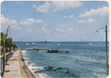
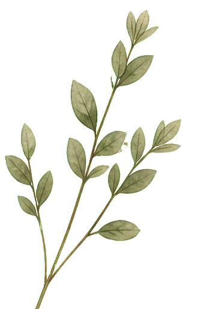
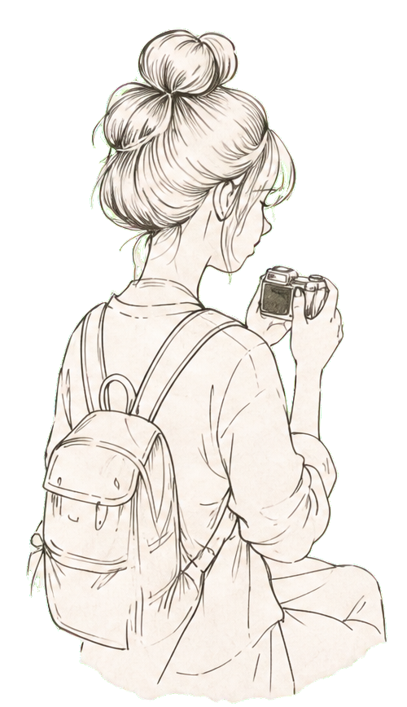
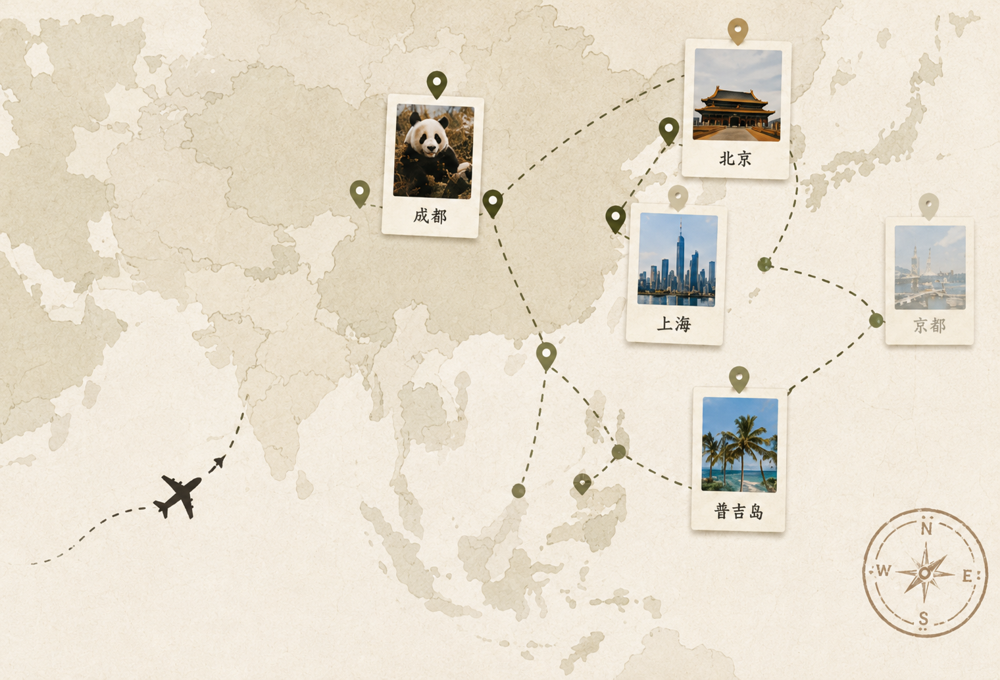
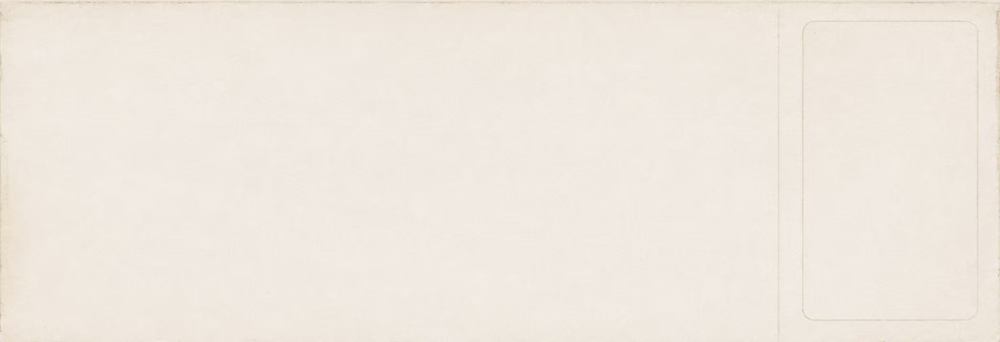
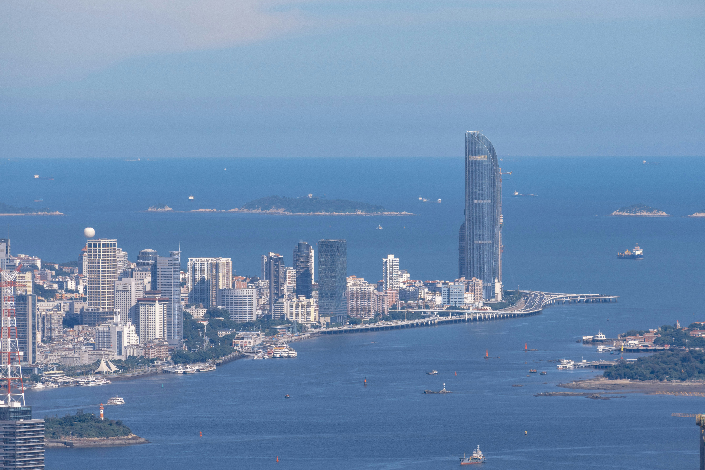
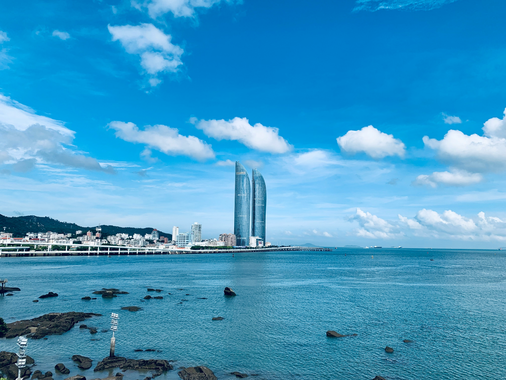
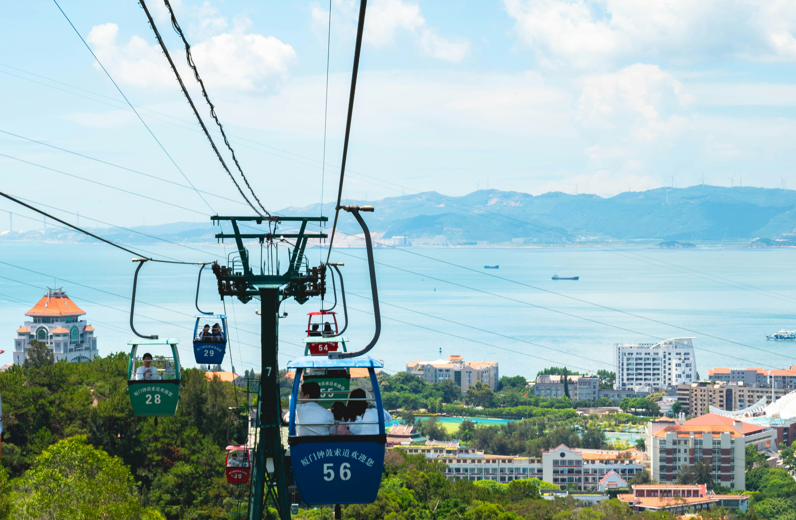
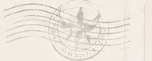
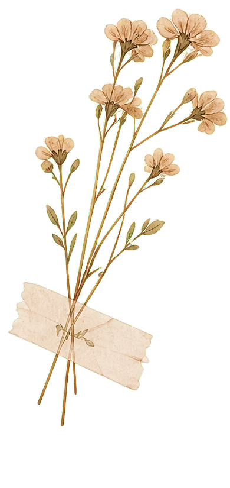

厦门の海边日记
吹着海风，走在沙滩上，所有的烦恼都被海浪带走了。
⌖ 厦门
♡
每一段旅程，都是生活的礼物 ✦




吹着海风，走在沙滩上，所有的烦恼都被海浪带走了。
在成都的街头走走停停，感受这座城市的温柔与悠闲。

第一次来北京，被这座城市的厚重感深深震撼。
十三朝古都，每一块砖都在诉说着历史里的故事。





2024.05.20 · 厦门
这是我第三次来厦门，还是会被这里的海和慢节奏治愈。
清晨沿着环岛路骑行，看日出、吹着海风，整个人都变得轻松起来。
午后在曾厝垵的小巷里闲逛，吃了很好吃的沙茶面和土笋冻。
傍晚坐在海边的礁石上，看着太阳慢慢落下，心里满满都是感动。
生活真的很美好，值得我们用心去感受每一个瞬间。♡
